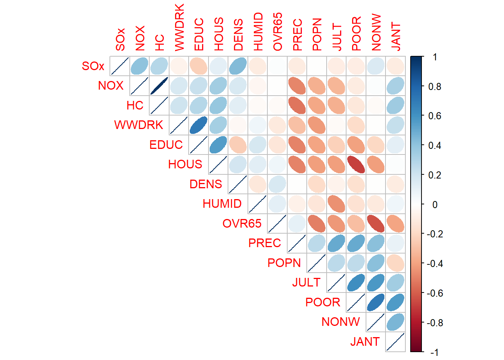

In a linear regression model, when the predictors (\(X_i\)s) are linearly dependent or highly correlated, we say that multicollinearity exists in the model, which causes the following issue for the fitted multiple regression model:
The estimate of any parameter, say \(\hat{\beta_2}\), depends on all the variables included in the model. For example, \(\hat{\beta_2}\) does not merely reflect the effect of the \(X_2\) variable on the response variable \(Y\). Due to multicollinearity, the other variables affect the estimate of the parameter \(\beta_2\). As a result, our inference about the effect of each predictor on the response is not reliable.
We have 15 predictors in our dataset, and we want to investigate the relationship between them and the response variable (mortality). There is a high correlation between most of the predictors. Figure 1 illustrates this:
#|warning: false#------------------Cleaning the memoryrm(list=ls())#------------------Reading Datalibrary(leaps)library("bestglm")data <-data.frame(mcdonald)#-----------------Centralize-Normalize Datadata.norm <- datafor(i in1:ncol(data)){ data.norm[,i] <- data[,i]-mean(data[,i]) data.norm[,i] <- data.norm[,i]/sqrt(sum((data.norm[,i])^2))}#----------------Separating X and Y(Mort)x.norm <- data.normmort.norm <- x.norm$MORTx.norm$MORT <-NULL#----------------Correlation Plot for predictors (X)res_xx <-cor(x.norm, method="pearson")library(corrplot)
corrplot 0.95 loaded
corrplot(res_xx, method ='ellipse', order ='AOE', type ='upper')

Figure 1: Correlation plot for 15 predictors of the data set
The correlation plot of the predictors indicates there is Multicolleniarity among predictors. For overcoming this issue the authors of the paper used Ridge Regression method and after exploring and comparing several Ridge and Ordinary Least Square models (Multiple Regression Models) they conclude that:
“In summary, the ridge regression coefficients obtained at \(k = o.2\) for the fifteen explanatory variables listed in Table IV, with one notable exception(\(NO_x\) ), appear to be reasonable values upon which to base a quantification of the association between these variables and the total mortality rate.”
In the following, we present a Principal Component Regression model with all fifteen predictors as an alternative model for overcoming multicollinearity and compare it with the final Ridge Regression model suggested by the authors.
Modeling PCR
In PCR, we try to provide a weighted linear combination of the predictors (\(X_i\)s) like: \[Z_k = v_{k1}X_1 + v_{k2}X_2 + \dots + v_{kp}X_p\] We then replace the correlated variables \([X_1, X_2, \dots, X_p]\) with \(Z = [Z_1, Z_2, \dots, Z_p]\) which are uncorrelated, so the regression model \(y = Z\beta_z + \epsilon\) does not suffer from multicollinearity.
First, we need to centralize and normalize all the variables for PCR. In the following, we assume the \(y\) and \(X\) variables are all centralized and normalized and show how to find the \(Z\) matrix.
We call \(Z_i\) the i-th principal component of matrix \(X\).
In ordinary least squares,
\[\hat{\beta_x}=\left( X'X \right)^{-1}X'y\]
We perform PCA on matrix \(X\) through singular value decomposition. We obtain \[UDV'=X\]\(U\) is the left singular vectors matrix, \(D\) is a diagonal matrix consisting of non-negative singular values, and \(V\) is the matrix of the right singular vectors matrix (eigenvectors matrix). We calculate matrix \[Z=XV\]
The columns of \(Z\) are linearly independent. If we define
\[\hat{y}=X\hat{\beta_x}=Z\hat{\beta_z}\] So, We have the regression model \(y = Z\beta_z + \epsilon\) without multilinearity, but gives the same predictions of the intial model \(y = X\beta_x + \epsilon\).
res_zz <-cor(z, method="pearson")library(corrplot)corrplot(res_zz, method ='ellipse', order ='AOE', type ='upper')
Figure 2: Correlation plot for 15 Principal Components (Columns of the matrix Z)
One question is: after converting the matrix \(X\) to \(Z\), how much of the information (variance) from the original matrix \(X\) does the principal component matrix \(Z\) retain?
The first principal component (\(PC_1\)) only accounts \(27\)% of the variation (information) of \(X\) matrix, the first two principal components (\(PC_1\) and \(PC_2\)) account \(30\)% of the \(X\) matrix variation and so on. All the principal components matrix,\(Z=[PC_1, PC_2,\dots,PC_{15}]\), account \(100\)% of the variation of of the \(X\) matrix.
p <-ncol(x.norm)PVE <-rep(NA,p)for(i in1:15){ PVE[i]<- variation[i,3] }barplot( PVE, names.arg =1:p, main ="scree plot", xlab ="number of PCs", ylab ="% of variance explained" )
Figure 3: The scree plot show the cumulative variance explained by principal components.
Full PCR Model
In the following we have fitted the Principal Component Regression model (\(\hat{y} = Z\hat{\beta_z}\)) for our data.
This model has exactly the same prediction values, residual sum of squares, and \(R^2\) as the Ordinary Least Squares model with the 15 predictors. However, there are some insignificant coefficients in this model. By following Ronald Christensen (2019), we can drop the predictors corresponding to insignificant coefficients and build the PCR based on the predictors with significant effects.
Reduced PCR Model
The principal components with significant effects in the full model are:
\[PC_1, PC_3, PC_6, PC_7, PC_9, PC_{12}\] These subsets of the principal components account for 51% of the variation in the original predictors (\(X_i\)s). We may say that the other 49% of the variation is not significantly related to the response variable.
\[\hat{MORT}= 0.251PC_1-0.319PC_3+0.339PC_6 -0.279PC_7+0.3PC_9+0.470PC_{12} \] We know each PC is a linear combination of all the original predictors, as follow:
plot(reduced_pcr$fitted.values,reduced_pcr$residuals, xlab ="fitted values for reduced PCR model", ylab ="residuals of the reduced PCR model")abline(h=0,lty=2,col="blue")
Figure 4: Residual versus fitted values of reduced PCR model
hist(reduced_pcr$residuals,breaks=13,xlab ="residuals of the reduced PCR model")
Figure 5: Histogram for the residuals of the reduced PCR model
Shapiro-Wilk normality test
data: reduced_pcr$residuals
W = 0.97511, p-value = 0.2574
Figure 6: Normal Q-Q plot for the residuals of the reduced PCR model
It seems the residuals of the reduced PCR model does not violate the assumptions.
Final PCR Model in Terms of the Original Predictors
The reduced model meets all the model assumptions and we consider it as the final PCR model.
we can also rewrite the model in terms of the original predictors:
\[\hat{\beta_x}=V\hat{\beta_z}\] where V is the vector of selected eigenvectors corresponding to selected principal components(\([PC_1, PC_3, PC_6, PC_7, PC_9, PC_{12}]\))
For this model \(R^2=0.712\) which is 14% larger (better) than the corresponding Ridge model (with k=0.2). In terms of residual sum of squared, the ridge model slightly works better than PCR. The residual sum of squared for PCR model is \(\phi^*=0.287\) , which is slightly larger than the residual sum of squares for the Ridge model. The coefficients estimated for predictors are not much different from the corresponding ones in the Ridge model, except for OVR65, WWDRK, and HC, which have different signs in the two models. For OVR65 and HC, the difference in sign may not be a concern, as the estimated coefficients for these two predictors in both models are close to zero and do not significantly affect the models. However, for WWDRK, the PCR model considers that WWDRK has a positive moderate effect on mortality, while the Ridge model considers a negligible effect of -0.034.